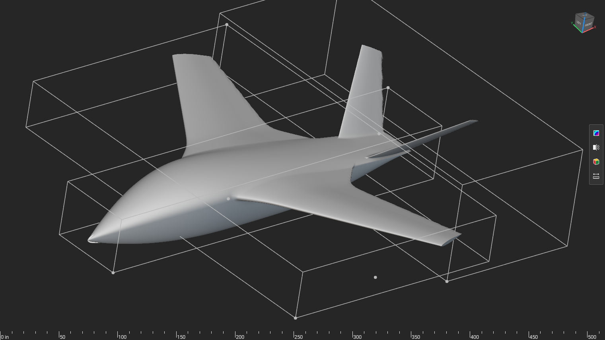

An AI agent used the prototype Notebook API to add a flight-dynamics export to a hand-built nTop model. The model now measures its own geometry and writes the JSON that Falcon's controllers read. This report explains the method, shows the evidence, and lists the API issues found on the way.
The Notebook API is ready for real work. An agent added 88 blocks to a hand-built airplane model, fully autonomously, and the model now regenerates its Falcon input deck within seconds of any design change.
Every step was verified against the model itself, not against the code that wrote it. The strongest check: the notebook measured the wing's dihedral as 3.0000000000000004 degrees from raw tip geometry, and 3.0 degrees is the design input two custom blocks upstream. The API also has sharp edges. Section 08 lists eleven of them for Anthony, each with the verbatim error message and a workaround.
Falcon builds stability-and-control (S&C) software: the code that decides how an aircraft's control surfaces move. Their tool takes one JSON file, called a deck, that describes the aircraft: where each part sits, how much it weighs, and the shape of each wing. Someone normally types that file by hand from CAD measurements.
The goal of this session: make an existing nTop airplane model produce that file itself, so the deck can never drift out of sync with the geometry. Change the wing, and the numbers Falcon sees change with it.
The tool for the job is the Notebook API, an unreleased prototype. It is a Python object named notebook that lives inside nTop's Python Console and can add blocks, wire them together, and read their properties: the same actions a person performs by clicking in the GUI. It exists only inside the GUI. There is no headless or network version.
Three things existed before the session started, all provided by Brad:
Fuse-Wing_R1, a hand-built airplane, open in a development build of nTop. Three implicit bodies: a blended fuselage, a swept two-panel wing, and twin canted fins. It was built for design work, with no export of any kind.Notebook API Demos) with a PowerShell script that types commands into the Python Console and an agent.py module that writes results to JSON files an agent can read.ntop-falcon repo, which holds Falcon's reference deck (the only specification of the format that exists), a Python package that assembles and validates decks, and a reader that expects one flat JSON of measurements with keys like main_wing__semispan.Brad made three scoping decisions up front: report the engine and battery from config values since the CAD does not contain them, use one placeholder density for all three bodies, and export raw nTop coordinates with the axis flip handled on the Falcon side.

The API has no socket and no command line. Its one entry point is a text prompt inside a GUI window. The harness turns that into something an agent can operate alone:
The screenshot matters as much as the files. The files say what got wired; the screenshot says what the model looks like. The two channels were cross-checked and agree. Every claim in this report was verified through at least one of them.
The API is a prototype with no documentation, so the session started by probing it rather than trusting it. A throwaway module (probe.py) added blocks to a scratch section, tried each operation, and recorded what actually happened. Three findings shaped the whole design:
The probe results drove a two-channel design. A small recipe file carries only the literals the API refuses to set: the 57 key names, the output path, and unit-carrying constants. The agent imports it, then builds everything numeric with the plain API and wires the imported variables in. Nothing is guessed; block identifiers came from the API's own catalog of 2,571 entries.
One new section, FALCON EXPORT, added to the model. It contains 88 blocks. One is a temporary list container that the build script deletes after use. The rest form three measurement chains and one output chain:
export_json block writes the file. nTop re-evaluates the chain whenever an upstream input changes, so the file rewrites itself.Every block the agent makes carries an FX prefix. That is how the companion reset function finds its own work and removes it without touching the airplane. The build refuses to run twice, because nTop renames duplicate blocks and a second graph would wire to nothing, silently.
The historical full-window screenshot is omitted because its title bar contains a private machine path. The model viewport and API workflow diagram remain.
Falcon One Metre = 39.3701: the GUI displays inches, which is also what the API silently speaks (finding 2 in Section 08). Bottom of the tree: the FALCON EXPORT section. The log shows the JSON export block completing in microseconds after a change.A build that does not raise an error proves nothing here, because this API's most common failure is a silently unwired input. Four independent checks were run instead:
The model carries no material, so the notebook uses a placeholder density of 1 kg/m³, chosen so mass equals volume numerically and cannot pass for a measurement. Measured solid volumes: fuselage 10.401 m³, wing 4.204 m³, fins 0.335 m³. The engine and battery numbers are hand-entered placeholders in the config, flagged as such, and the deck generator prints a NOT MEASURED warning naming them on every run. Set a real density in the notebook and the whole deck follows.
Most of the session's debugging time went into the transport, not the modeling. The console is a GUI text widget, so commands reach it through simulated keystrokes, and three separate failure modes had to be found and engineered out:
Set-Clipboard call began failing with "Requested Clipboard operation did not succeed", no process reported as owner, and it never recovered. The script now stages each command in a file and types only a fixed exec(open(...).read()) line, so nothing variable touches the clipboard or needs keystroke escaping.py> ('D:/...console_cmd.py').read())
File "<stdin>", line 1
('D:/...console_cmd.py').read())
^
SyntaxError: unmatched ')'
The transcript above shows failure mode two as the console saw it: the launch line arrived without its first nine characters. None of this is a Notebook API defect. It is the cost of the API having no entry point other than a GUI widget, which is why Section 08 ends with a transport suggestion.
Everything below was measured on build 42594, most of it with error text captured verbatim. Severity reflects the agent's experience: Blocker stopped work until a workaround existed, Trap produces wrong results or dead ends silently or confusingly, Note is behavior to document rather than change. Numbering follows the order of discovery, so the most consequential finding is last.
Findings 1 through 10 cost an agent time. Finding 11 caps what the API can produce: it authors models that only a person can drive. promote_to_input(block_id, name, description) and set_output(block_id) would together turn an API-authored notebook into something ntopcl can sweep, which is the difference between authoring a model and shipping a pipeline.
Every finding above reproduces from nTopScripts/probe.py in the harness repo: probe.setters, probe.wiring, and probe.import_probe re-measure findings 1, 2, 5, 6, and 8 in about a minute. Re-running them after a build bump is much cheaper than rediscovering the traps.
This task is exactly the work nobody wants to do by hand. Building the export section means placing 88 blocks, making roughly 200 wiring calls (est.), and keeping 57 keys paired with 57 values by position, where a single swap corrupts the deck without any error. It is precise, repetitive, and unforgiving: grunt work.
The agent did it in about 75 minutes of wall clock (derived from file timestamps), including three failed builds, the dihedral bug, and a rewrite of the console transport. What made that possible was not speed. It was that the API let the agent close its own loop: build a piece, export the recipe, read back what actually got wired, screenshot the model, and correct. The 177-degree dihedral was caught because a measured output disagreed with a known input, which is the same discipline a good engineer applies, executed automatically.
The result is a pattern, not a one-off. Any notebook can be given a self-updating measurement export with the same recipe-plus-API technique, and the harness, probes, and traps are documented in the repo for the next agent or the next person.
The pattern stops one step short of a DOE sweep, and finding 11 is why. The measurement chain itself is sweep-ready: ntopcl re-evaluates it headless and rewrites the file, verified. What is missing is that the model exposes no inputs for a sweep to vary and no output for it to collect, and the API cannot add either. Until that is fixed, making a model sweepable needs a person in the GUI, whatever else the agent did on its own.
Model: Fuse-Wing_R1-AIbuild-falcon.ntop, saved with the export section. Harness and build code: [local path omitted] (nTopScripts/falcon.py, legacy integration module.py, probe.py, tools/ntop_console.ps1, tools/make_falcon_recipe.py). Falcon side: [local path omitted] (falcon_config_fusewing.json, docs/FUSEWING.md, tests/test_fusewing.py; 90 tests pass). Export file: ntop_exports/fusewing_measurements.json, 57 scalars. Deck: build/Fusewing.generated.json. All error messages are verbatim from nTop 6.0.0-rc build 42594 on 29 Aug 2026. Numbers labeled (est.) or (derived) are the agent's estimates from session records; everything else is measured output.